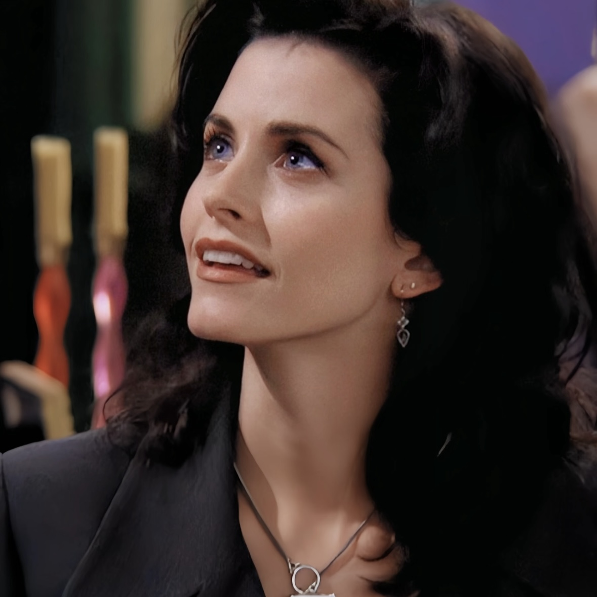
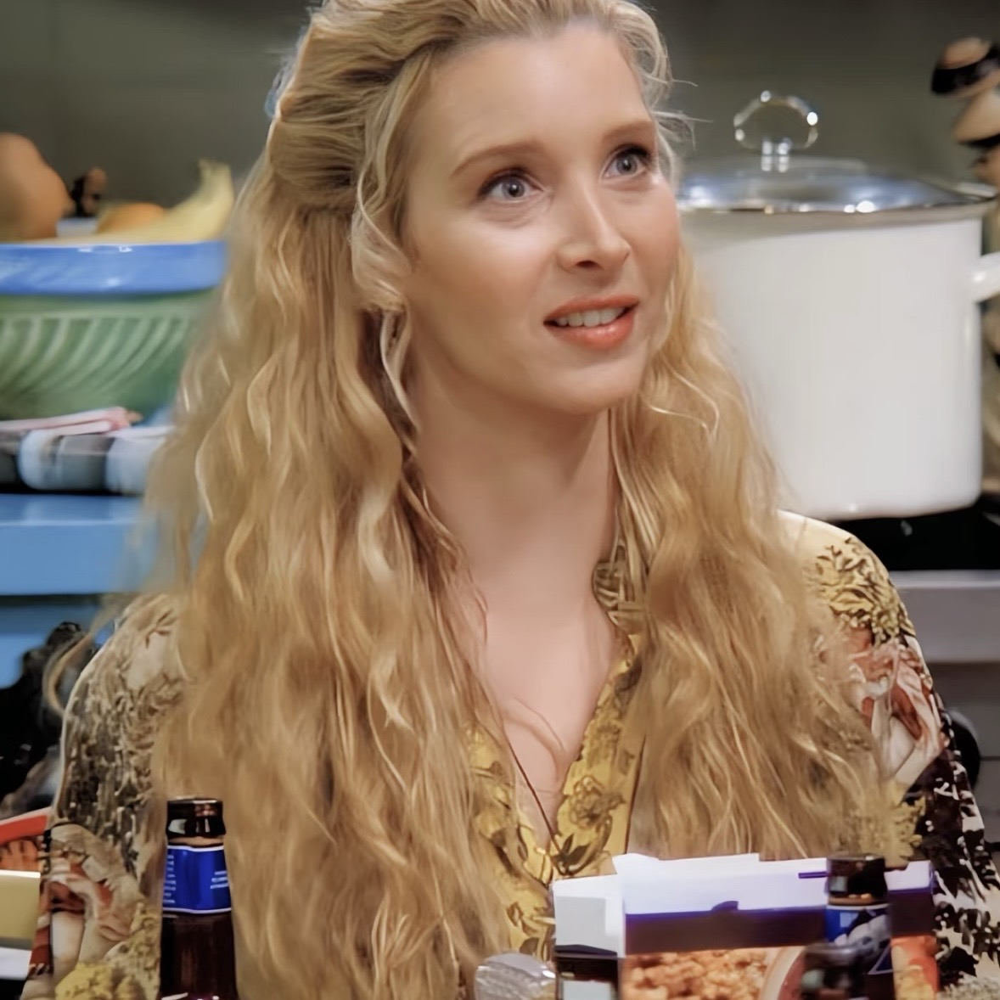
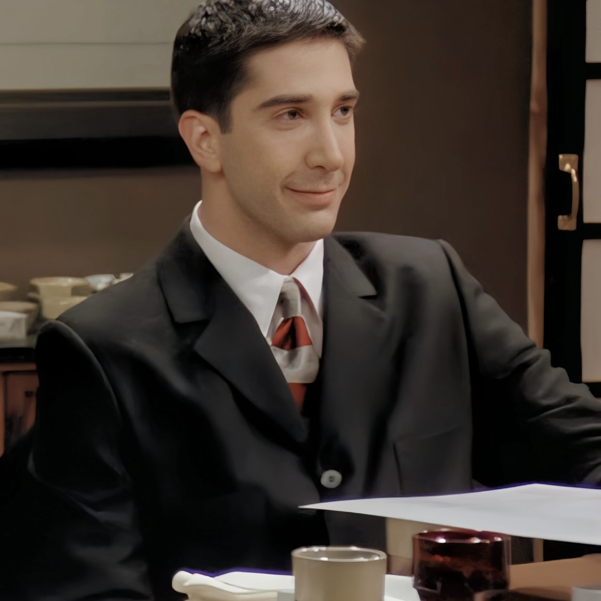
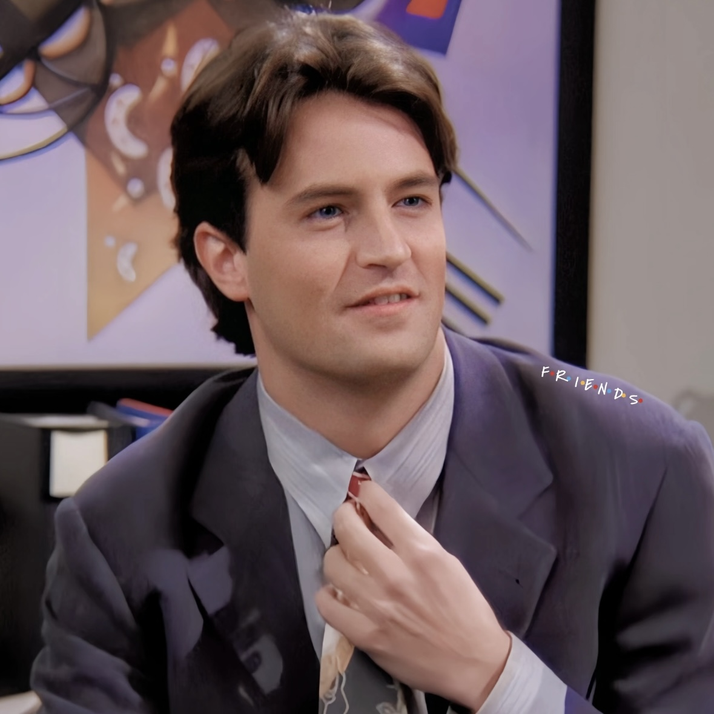
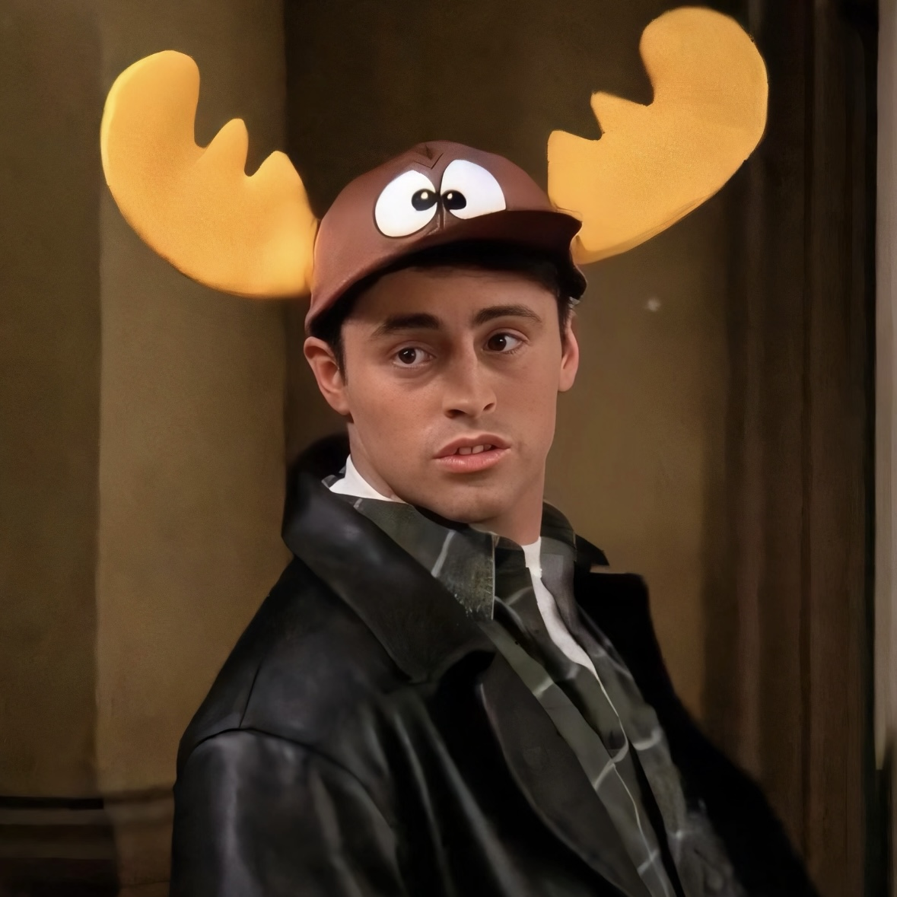

Rachel is a fashion enthusiast with a strong personality and career aspirations. She grows to become independent and confident.

Monica is a perfectionist and a culinary expert. Her enthusiastic and organized personality keeps everything in order.

Phoebe has a quirky, innocent character, enjoys singing, and has a unique sense of humor and backstory.

Ross is a paleontologist, slightly awkward but with a wealth of knowledge and an endless sense of humor.

Chandler’s wit and humor make him a cherished friend. He may be neurotic at times, but he always brings laughter.

Joey is an actor who, while not the brightest, charms everyone with his adorable and fun-loving personality.
| Season | Episode | Title |
|---|---|---|
| 1 | 1 | The One Where It All Began |
| 5 | 8 | The One with All the Thanksgivings |
| 10 | 17 | The Last One |
Want to dive deeper into the world of Friends? Check out the official Friends TV Show Website or shop at the Friends Online Store.